Clock In/Out
Clocking In
Select the 'Clock In' button to create a starting date/time.
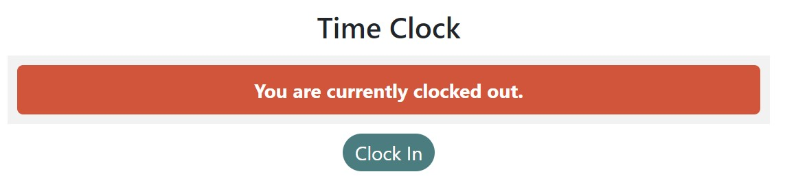
Clocking Out
After selecting the 'Clock In' button, the user status will change to 'You are currently clocked in.'. Select the 'Clock Out' button to now create a finishing date/time.
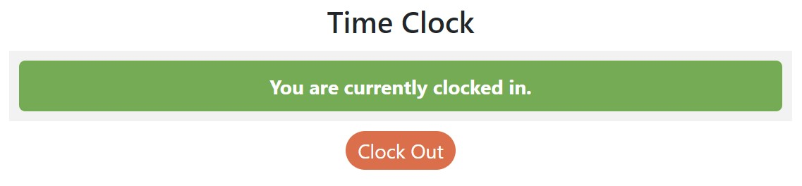
After selecting the 'Clock out' button, a new Timesheet Entry is created in the Timesheet List and the user status will change to 'You are currently clocked out.'. Select a Timesheet Entry to view more details or make/request any changes to the entry.
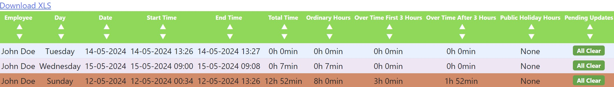
Requesting Changes
The Timesheet Details summary displays an overview of the selected Timesheet Entry information.
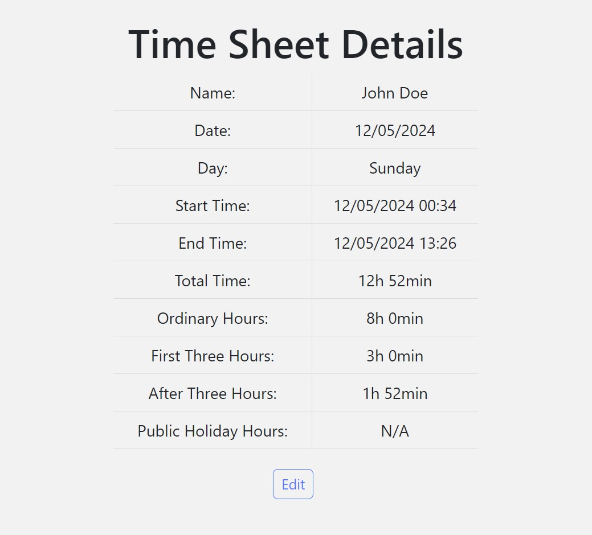
If any changes need to be made to a Timesheet Entry, select the 'Request Update' button.
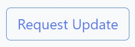
Requesting Timesheet Update
After selecting the 'Request Update' button, a Request Timesheet Update window will allow you to input information for the change request. After the new details have been inputted, select the 'Submit Request' button.
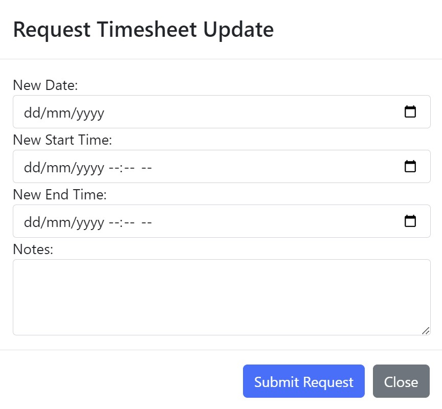
-
 New Date: The new date for the working day.
New Date: The new date for the working day. -
New Start Time: The new starting date/time.
-
New End Time: The new finishing date/time.
-
Notes: A brief description/reason for the changes to be made.
Update Requests
After selecting the 'Submit Request' button, a new Update Request Entry is created in the Update Requests List
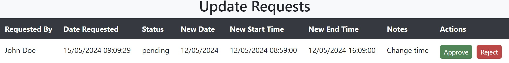
-
Requested By: The user who requested the change.
-
Date Requested: The date when the change request was created.
-
Status: The current status of the change request.
-
New Date: The requested new date for the working day.
-
New Start Time: The requested new starting date/time.
-
New End Time: The requested new finishing date/time.
-
Notes: A brief description/reason for the changes to be made.
-
Actions: Buttons for
 Administration and
Administration and  Accounts users to approve or reject the request.
Accounts users to approve or reject the request.
Once a change request has been submitted, the Pending Updates column in the Timesheet List will update to 'Pending Updates'.
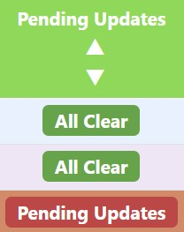
Pending Updates
By default, a Timesheet Entry will display 'All Clear' until a change request is made.
Creating Changes
Select the 'Edit' button underneath the Timesheet Details summary to make a direct change to a Timesheet Entry.
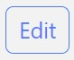
What User Groups Can See This?
Only Administration and Accounts users can make changes.
Edit Details
After selecting the 'Edit' button, an Edit Details window will allow you to input information to make a direct change to the Timesheet Entry. After the new details have been inputted, select the 'Save' button to save and apply the changes to the Timesheet Entry.
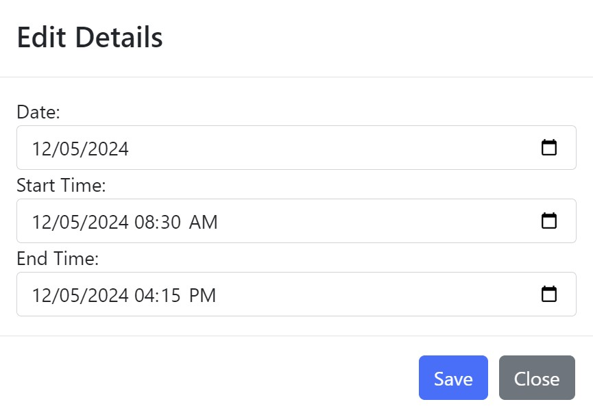
-
Date: Change the date.
-
Start Time: Change the starting date/time.
-
End Time: Change the finishing date/time.
Approving/Rejecting Changes
If an Update Request Entry exists for the Timesheet Entry it will appear in the Update Requests List with an Actions column containing an 'Approve' and 'Reject' button. The 'Approve' button will apply the request changes to the Timesheet Entry and the Status will be changed to Approved. The 'Reject' button will deny the request changes and the Status will be changed to Rejected.
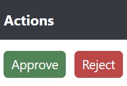
What User Groups Can See This?
Only Adminstration and Accounts users can view this.
Search Filters
Users with the relevant permissions can filter by Employee when viewing the Timesheet List. Select the dropdown menu to reveal a search field and begin typing to search for an Employee.
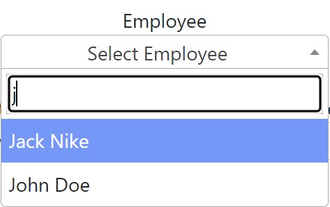
What User Groups Can See This?
Only Adminstration and Accounts users can view this.
Filter by date using the Start Date and End Date to make navigating and finding a specific Timesheet Entry easier. When the filters have been defined, select the 'Apply Filter' button to apply the filters to the Timesheet List. Remove any information entered into the filters by selecting the 'Clear Filter' button.
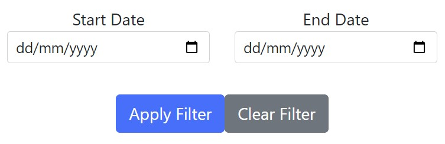
Exporting Timesheets
Select the 'Download XLS' button to download the Timesheet List. Timesheets can be exported into a .XLSX format to allow the data to be viewed in programs such as Microsoft Excel or Google Sheets.
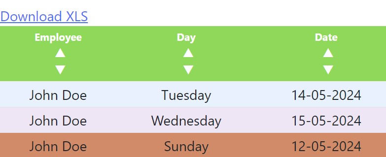